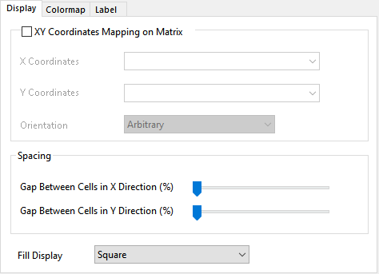

Die Registerkarte Anzeige für Heatmap (Details Zeichnung)
PD-Dialog-Display4-Tab
Diese Registerkarte kann verwendet werden, um die XY-Koordinaten, die Abstände in XY-Richtung und die Anzeigenstile in einer Heatmap zu steuern.
- 
Abbildung der XY-Koordinaten auf Matrix
Die Option wird üblicherweise für Heatmaps verwendet, die auf Grundlage von NetCDF-Daten gezeichnet wurden, um Längen- und Breitengrade festzulegen.
Das Festlegen von XY-Koordinaten von der Matrix aus wird unterstützt.
Legen Sie die Ausrichtung auf Beliebig, Im Uhrzeigersinn oder Gegen den Uhrzeigersinn fest.
Abstände
Diese Schieber werden verwendet, um die Breite des Abstands in XY-Richtung zu steuern, auf einer Skala von 0 bis 100.
_Display4_Tab/Tip_icon.png) |
- Wenn der Abstand in eine Richtung geht:
- 0 bedeutet, dass es keinen Abstand zwischen den Zellen in dieser Richtung gibt, 100 bedeutet, dass die Zellen als Zeilen in dieser Richtung angezeigt werden.
- Wenn der Abstand in beide Richtungen geht:
- Die Berechnungsmethode des Abstandswerts unterscheidet sich von der obigen. Der Zellenwert ist nicht unabhängig für X oder Y. In beide Richtungen gilt 100 % Zellenwert = (Zellenbreite + Zellenhöhe)/2.
Wenn Sie zum Beispiel Abstand zwischen Zellen in X = 30 und Abstand zwischen Zellen in Y = 50 setzen,
dann ist der tatsächliche Abstandswert in X-Richtung = (Zellenbreite + Zellenhöhe)/2*30% und
der tatsächliche Abstandswert in Y-Richtung = (Zellenbreite + Zellenhöhe)/2*50%
|
Füllungsanzeige
Sie unterstützt die fünf Anzeigestile Quadrat, Oberes Dreieck, Oberes Dreieck ohne Diagonale, Unteres Dreieck und Unteres Dreieck ohne Diagonale.
|
Hinweis:
Wenn die Heatmap X und Y nicht N*N ist, sind diese vier Optionen Oberes Dreieck, Oberes Dreieck ohne Diagonale, Unteres Dreieck und Unteres Dreieck ohne Diagonale nicht verfügbar.
|